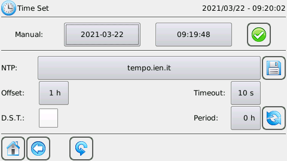
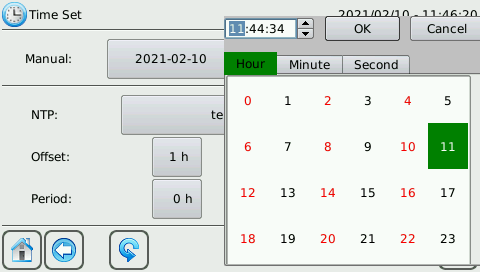
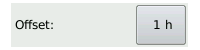
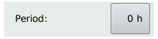
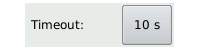

La página de Time Set se utiliza para ajustar la fecha y la hora del sistema.

Está dividida en 2 áreas:
En la sección manual puede ajustar manualmente la fecha y la hora del sistema.
Pulsando sobre el botón con la fecha aparecerá el calendario.
Para seleccionar el día a ajustar sólo tiene que pulsar sobre el día deseado.

Es posible avanzar o retroceder en los meses a través de las flechas situadas en la parte superior del calendario, o pulsando sobre el botón con el mes actual es posible visualizar todos los meses del año.
Para cambiar el año puede avanzar o retroceder con las flechas o pulsar el botón con el año actual y seleccionar el año deseado.
Pulsando el botón con la hora aparecerá el selector de horas, minutos y segundos.
Pulsando OK se guardarán las horas, minutos y segundos configurados.
Cancel cancela la operación.
Para confirmar la operación de cambio manual de fecha y hora pulse
Una vez finalizada la operación, aparecerá un cuadro de mensaje de confirmación.
En la sección NTP es posible establecer mediante NTP la fecha y la hora del sistema, en particular es posible establecer los parámetros para habilitar el Protocolo de Tiempo de Red, es decir, servidor ntp, timeout en segundos, time offset en horas y período en horas.
La funcionalidad NTP debe utilizarse expresamente con el servicio sMily activado.
El servidor NTP por defecto es tempo.ien.it y es posible cambiarlo a través del botón:
El desfase horario (time offset) establece la diferencia de zona horaria y por defecto es de +1 hora (CET). Se permiten valores enteros de -12 a +12.
El período establece cada cuántas horas la sincronización NTP tiene que ocurrir, 0 h significa que no hay sincronización, por defecto es 0
El timeout indica el tiempo de espera (en segundos) en el que se puede recibir una respuesta del servidor NTP, el valor por defecto es 10
La configuración actual se guarda mediante
La sincronización con el servidor NTP se realiza con el botón
Para restablecer la configuración por defecto utilice
Una vez finalizada la operación, aparecerá un mensaje de confirmación.